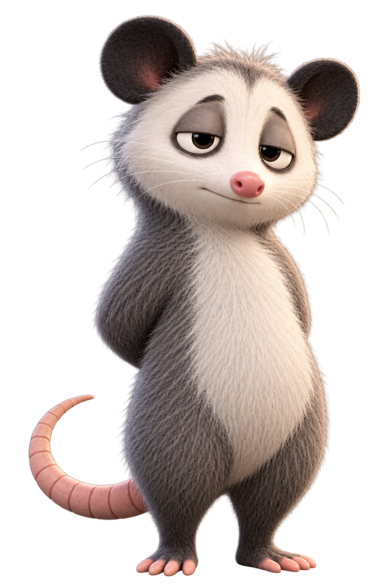
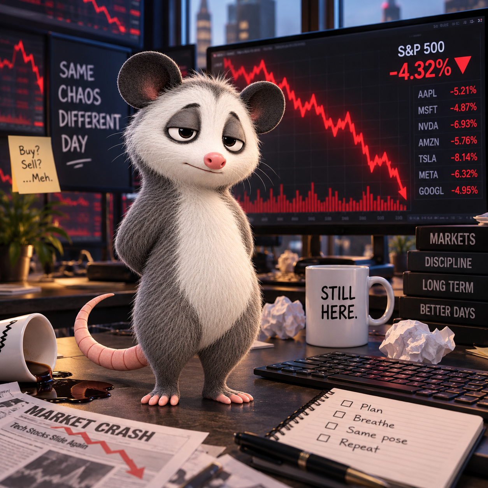

Posby is a gray and white opossum who exists in the gap between disaster and dignity. Things go wrong constantly. Coffee spills. Deadlines pass. Mondays happen. Posby's response is always the same: hands behind his back. Just... composure.
Always. Even when everything is on fire.
Not exhausted. Just experienced.
Never boastful. He knows who he is.
Composure in ridiculous situations. That's the point.
Everyday problems. Not epic challenges. Just life.
Life is the comedian. Posby is the audience.
He doesn't ignore problems. He acknowledges the situation and chooses composure. He can't control the chaos, but he can control his posture.
Hands behind back. Not a gesture of surrender — a deliberate choice. The pose is the character. The pose is the message.
"I can't control the chaos, but I can control my posture."
Posby is inspired by a viral image of an opossum photographed standing upright with its hands clasped behind its back. The pose resonated because everyone knows the feeling — projecting calm while processing chaos on the inside. Posby takes that single moment and develops it into an original recurring character: the straight man to life's comedian.

You don't need to buy anything or join anything. You just need to have survived a situation that required composure.
Make your own Posby memes. Use the pose.
Post Posby when words aren't enough.
Find others who get it. We've all been there.